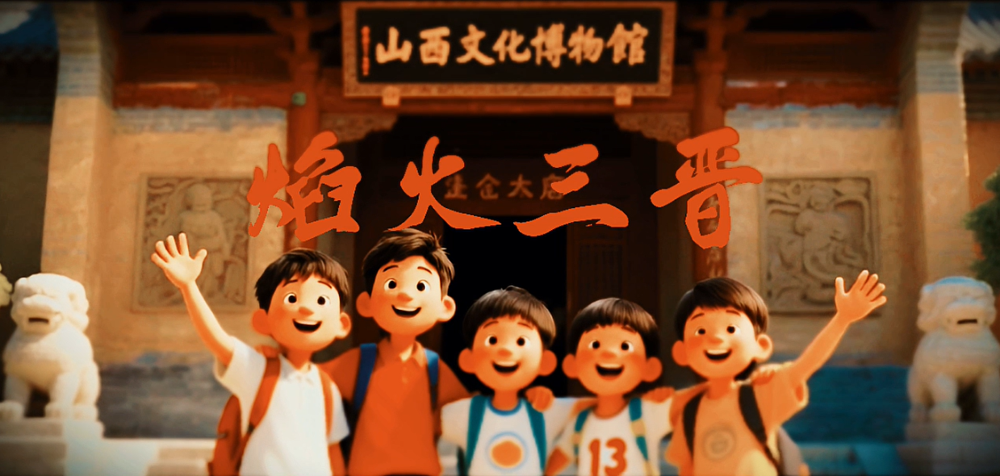
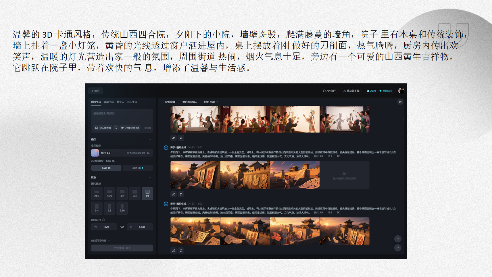
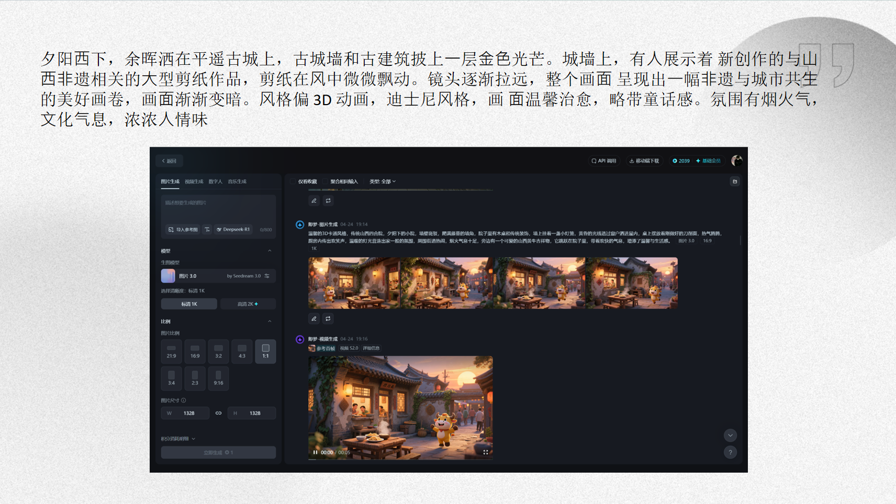
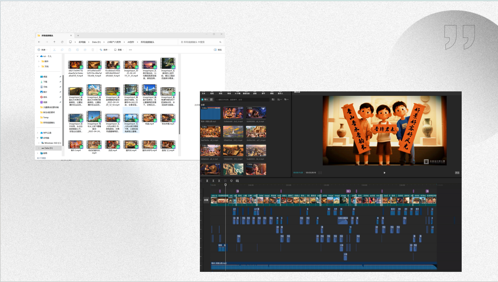

焰火三晋
一部为山西文旅宣传量身打造的 AIGC 动画短片。以千年三晋大地为舞台，以焰火为视觉线索，串联云冈石窟、平遥古城、壶口瀑布、应县木塔等山西标志性文化符号——全流程借助 AI 工具链完成，用生成式人工智能重新演绎华夏古文明的磅礴与浪漫。

🎤 作品完成后，受邀参与多场 AIGC 动画创作分享讲座与教程制作，曾带领不同专业背景的学生学习 AIGC 动画创作方法与流程。



🎯 项目背景 · Background
山西，华夏文明的重要发源地之一——从北魏云冈到明清平遥，从壶口奔雷到太行巍峨，三晋大地承载着五千年未曾中断的文化脉络。然而，在短视频与数字内容主导传播的时代，传统文化如何以更年轻、更震撼的方式触达新一代观众？《焰火三晋》应运而生：以"焰火"为核心视觉意象——既是节庆的欢腾，也是文明的薪火相传——将山西最具代表性的文化遗产串联为一场流动的视觉盛宴。
🤖 AI 学习与思考 · Learning & Insights
《焰火三晋》是我较早系统性接触 AI 工具的起点。通过这个项目，我从零开始探索 AIGC 创作全流程，在反复实践中逐步建立起对 AI 底层逻辑的认知——理解 Prompt 的运作机制、不同模型的能力边界、以及工具链之间的协作关系。更重要的是，这段经历让我明确了属于自己的 AI 使用方式：不是追逐每一个新工具，而是回归底层逻辑，找到与自身创作风格契合的方法。在 AI 时代，技术迭代的速度远超个人学习的速度，与其被动追逐，不如把握核心原理，在理解"AI 如何思考"的基础上，建立属于自己不可替代的创作语言。